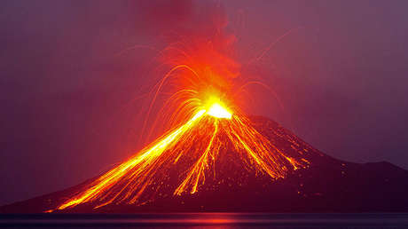

El archipiélago de Krakatoa (en indonesio: Kepulauan Krakatau)1
es el nombre que se da a un conjunto de islas volcánicas —en su
mayoría casi desaparecidas— situada en el estrecho de Sonda, entre
Java y Sumatra al suroeste de Indonesia. Se ubica cerca de la región de
subducción de la placa indoaustraliana muy cerca de la frontera de esta última con la placa euroasiática.
El nombre Krakatoa se utiliza también como antonomasia para designar a la isla principal del archipiélago;
la Rakata y al volcán Anak Krakatau que ha entrado en erupción en repetidas ocasiones y con consecuencias
desastrosas a lo largo de la historia y el tiempo.
En los años anteriores a la erupción de 1883, la actividad sísmica
alrededor del volcán era intensa, con algunos terremotos en lugares
distantes como Australia. El 20 de mayo de 1883, tres meses antes de
la gran erupción, comenzaron a registrarse escapes de gases en Perboewatan,
en el norte de la isla
Las erupciones de ceniza alcanzaron una altura de
6000 metros y las explosiones pudieron oírse en Batavia
(Yakarta), a más de 150 kilómetros de distancia. La filtración
de agua en la cámara de magma produjo grandes cantidades de vapor y humo,
pero la actividad se extinguió hacia finales de mayo.
Como resultado, la población
autóctona no adoptó medidas de seguridad adicionales. Sin embargo, la comunidad
científica envió expertos para estudiar la isla y encontraron inquietantes signos de actividad volcánica.
En 2004, un astrónomo propuso que el cielo rojo ensangrentado mostrado en la
pintura El grito (1893) de Edvard Munch es también una precisa representación
del cielo sobre Noruega después de la erupción en 1883.678 Esta explicación ha sido
discutida por eruditos del arte, quienes notan que Munch fue más un pintor expresivo que descriptivo.

El Krakatoa hizo erupción recientemente,
el 10 de abril del 2020, casi 2.800 personas de al menos 28 aldeas fueron evacuadas aquel dia, dejando al menos
439 personas murieron y más de 7.200 resultaron heridas
EL VOLCÁN MAS PELIGROSO
El 27 de agosto de 1883 cuatro inmensas explosiones —que pudieron escucharse hasta a 5.000 kilómetros
de distancia— destruyeron casi las tres cuartas partes del archipiélago de Krakatoa (o Krakatau),
en la actual Indonesia. Los tsunamis generados costaron la vida a más de 36.000 personas.
La erupción del Krakatoa liberó una energía 13.000 veces mayor que la bomba atómica de Hiroshima.
Erupciones
El 27 de agosto de 1883 sucedió la catastrófica erupción del Krakatoa,
causando un tsunami con olas de 22 metros y más de 36 000 personas perdieron
la vida. El volcán desapareció en gran medida bajo el mar, pero en 1927 comenzaron
las erupciones volcánicas de nuevo bajo el mar, y entre 1928 y 1930 apareció la
isla Anak Krakatau. Las erupciones periódicas han continuado desde entonces, con
erupciones recientes en 2009, 2010, 2011, 2012 y 2020 y un colapso importante en 2018.
A finales de 2011, esta isla tenía un radio de aproximadamente dos kilómetros, y un punto
más alto de aproximadamente 324 metros sobre el nivel del mar, creciendo cinco metros al año.
En 2017, la altura de Anak Krakatau se estimó que era más de 400 metros sobre el nivel del mar;
tras un colapso en diciembre de 2018, la altura se redujo a 110 metros (361 pies).
El 10 de abril de 2020, el volcán volvió a entrar en erupción. La erupción duró 40 minutos y fue de menor
energía que la de 2018. Arrojó lava y formó una columna de humo y cenizas de entre 14 y 16 km.
Medios generalistas refieren que esta erupción habría activado, además, más de quince volcanes a
lo largo del Cinturón de Fuego del Pacífico, entre ellos Kliuchevskoi y Shiveluch en Rusia, Aso,
Kuchinoerabu y Sakurajima en Japón, Ibu, Merapi, Semeru, Dukono y Kerinci en Indonesia, Popocatépetl en México,
Sangay en Ecuador, Sabancaya en Perú y Nevados de Chillán en Chile.8 Aunque los geólogos y divulgadores
científicos Nahún Méndez y Rubén Aguayo indican que la erupción de los volcanes de esta zona no es nada extraño
y más bien es la norma, siendo falso que la erupción de este volcán haya producido la de los demás. Muchos
de esos volcanes estaban en erupción desde antes del 11 abril.